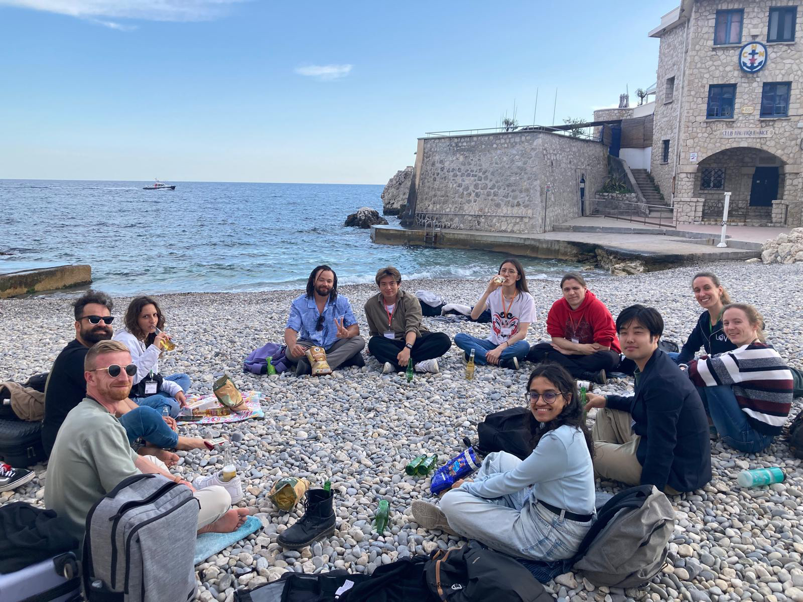

Note my work trajectory
- 
Nice again! Love the ECR of Tara Oceans so much.
Attended the Tara Ocean retreat 2025 (Nice, France) and did an oral presentation.
Attended the 12th Aquatic Virus Workshop (Banyuls-sur-Mer, France) and did a oral presentation.
Attended the JSME37 (Hiroshima, Japan) and gave an poster presentation/
Attended and co-organized the 第1回水圏低次生態研究集会 (Obama, Japan)
Attended the Tara Ocean retreat 2024 (Nice, France) and did an poster presentation.

The title is changed to Program-specific Professor
Got the doctoral degree, PhD (Sc.) from Graduate School of Science/理学研究科 of Kyoto University
Finished my PhD defense at Science Seminar House of Graduate School of Science/理学研究科.
Many thanks to Prof. Mochizuki, Prof. Takada, Prof. Tsuge to attend my defense.Got the 2023 ICR Award for Young Scientists of Institute for Chemical Research (ICR), Kyoto University.
Attended the JSME36 (Hamamatsu, Japan) and gave an invited talk
Oral presentation at International Young Scholars Forum of Shanghai Jiaotong University, Virus Subforum
The Polar Adaptation paper was accepted by Nature communications.
Editors' Highlight, Kyoto University NewsAttended the 11th Aquatic Virus Workshop (Québec City, Canada) and did a poster presentation.
The Mirus paper was accepted by Nature!!!
Yahoo!, Kyoto University News, Chinese Translation/BlogAttended the JSME35 (Sapporo, Japan) and did an oral presentation.
Attended the Tara Ocean retreat 2022 (Nice, France) and did an oral presentation.
Started working as Program-specific Researcher/特定研究員
Attended the 10th Aquatic Virus Workshop (Kyoto, Japan, Online) and did a poster presentation about virus host prediction.
The Host prediction paper was accepted by mSphere.
Won the Gold Award on the BIC presentation day.
Won the Best Presentaion Aaward of JSME Environmental Virus Meeting 2019 at Kyoto.
Sampling at Uranouchi Inlet, Kochi prefecture, Japan.
Joined a lab tour, inlcuding the Kyoto City Zoo, Primate Research Institute, Center for Ecological Research, Kyoto University Shirahama Aquarium, Seto Marine Biological Laboratory. It was so fun!
Start Doctoral course at Graduate School of Science/理学研究科, Kyoto University.
Arrived Japan and joined the Ogata Lab, ICR, Kyoto University.